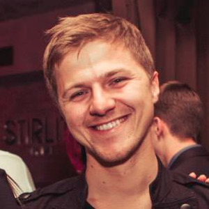

Микита Микадо, основатель PandaDoc. Начав свой первый бизнес в 20 лет, Микита с партнером Сергеем Борисюком всего через несколько лет покорили Кремниевую долину. Сегодня головной офис PandaDoc расположен в Сан-Франциско, в компании работает
более 120 человек. Продуктом пользуются 7000+ компаний по всему миру. За 6 лет своего развития проект PandaDoc привлек финансирование в размере $ 20 млн, в том числе от Microsoft.

Максим Леонович, основатель OneBar. OneBar — это база знаний (Q&A) для вашей команды. Это похоже на StackOverflow или Quora, но не публично, а только для рабочей команды. Решение оптимизировано для совместной работы и интегрируется с популярными
системами, которые вы используете в работе.

Тимофей Липский, основатель RocketBody. Фитнес-евангелист и сооснователем белорусского стартапа RocketBody. Фитнес-браслет позволяет после снятия ЭКГ определять степень стресса, степень усталости, периоды, когда организм начинает восстанавливаться
после физических, эмоциональных, психических нагрузок.

Артем Высотский, глава People.ai. Платформа AI для корпоративных продаж, маркетинга и успеха клиентов, открывающая любую возможность получения дохода от каждого клиента.